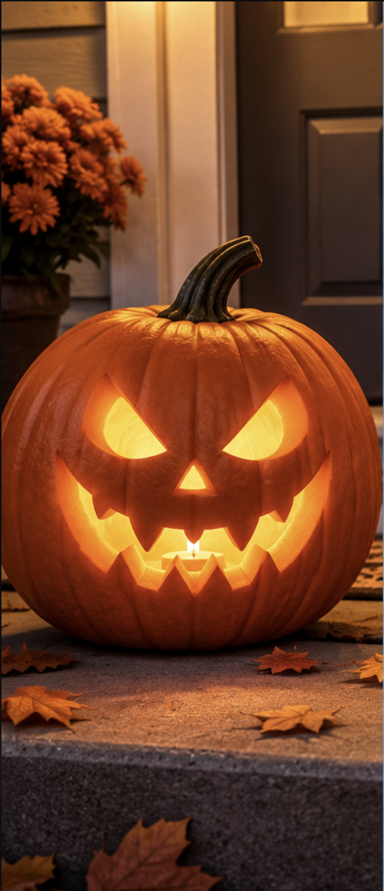
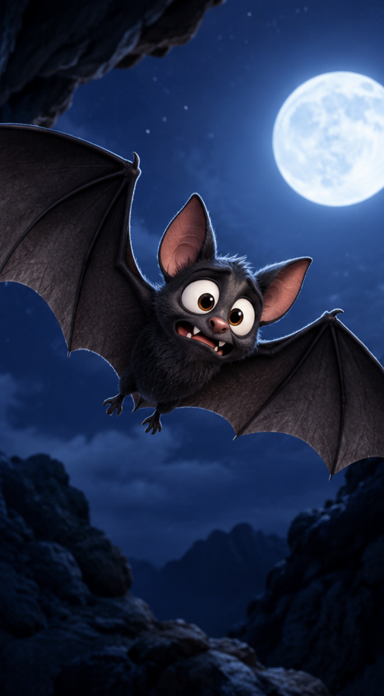
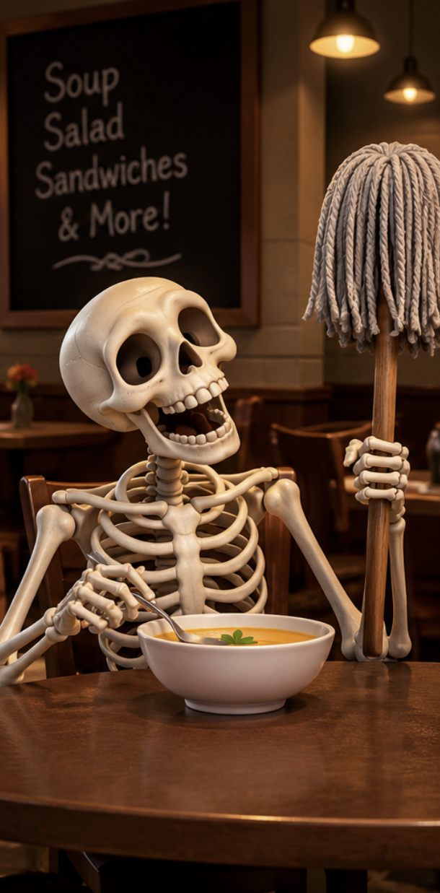

Happy Halloween

Pumpkins
One Halloween night, Jake carved a pumpkin and gave it the scariest face imaginable. He placed it on his porch to scare trick-or-treaters. The next morning, Jake found the pumpkin rolling down the driveway. He chased it, tripped over a candy bucket, and landed face-first in a pile of leaves. His neighbor watched and said, “Wow, that pumpkin really got you squashed!” Jake looked up and yelled, “NEXT YEAR, I’M CARVING A WATERMELON!” 🍉😂

Bats
One Halloween night, a little bat named Barry refused to leave his cave. “Come on!” said his mom. “You’re a bat! You’re supposed to love the dark!” Barry shivered. “I know, but what if I bump into something?” His mom sighed and handed him a flashlight. Barry flew outside, turned it on, and immediately screamed, “AHHH! A MONSTER!” It was his own shadow. 😂🦇

Skeletons
One Halloween night, a skeleton walked into a restaurant and ordered a big bowl of soup. The waiter asked, “Would you like anything else?” The skeleton replied, “Yes, a mop!” The waiter looked confused. “Why do you need a mop?” The skeleton grinned and said, “Because I’m about to spill my guts!” 😂💀